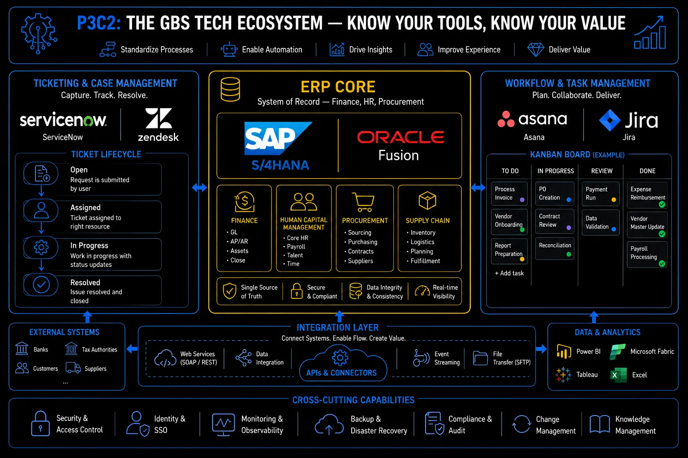

Pillar 3 · Cluster 2
The enterprise stack that runs GBS operations
ERP systems, ticketing platforms, and workflow tools are the operational backbone of every GBS center. Understanding what they do, why they matter, and where they break is non-negotiable knowledge for any GBS professional.
Sound familiar?
Topic 01 · Enterprise Resource Planning
Why ERP is the backbone, not the brain
ERP value is integration, not features — one database where every function’s transactions meet. The model is in THE FIX.
The backbone, not the brain.
Every task ends inside it.
 R
RRavi posts an invoice.
Procurement sees the PO close. Treasury sees the payment queue. Accounting sees the accrual move.
He never told any of them.
"One entry, and half the company’s data moved."
He feels connected to teams he has never met.
You treat the ERP as your screen. It is everyone’s single source of record.
The ERP’s value is integration — which makes your discipline everyone’s data quality.
Ravi learns which three teams consume his postings. His error rate suddenly has faces attached.
ERP as backbone — in depth
The value of an ERP is integration across functions, not the features of any single module. That distinction changes how you think about every process you touch.
Every transaction in a GBS center eventually touches an ERP — it is where data lands, gets validated, and becomes the official version of what happened.
- →Purchase orders, invoices, journal entries, payroll runs, intercompany settlements — all flow through SAP, Oracle, or Microsoft Dynamics as the system of record
- →The ERP is not where intelligence lives — it is where transactions are captured and validated
The real power of an ERP is not any individual module. It is the integration layer: the fact that a purchase order in procurement automatically creates a commitment in finance, triggers a goods receipt in logistics, and updates the cost center budget in real time.
When that integration breaks, you get manual reconciliations, duplicate entries, and audit findings. Most GBS process failures trace back to broken ERP integration, not missing features.
- Finance (FI/CO) — general ledger, accounts payable and receivable, cost center accounting, asset management, and intercompany eliminations
- Procurement (MM/Purchasing) — purchase requisitions, purchase orders, goods receipt, invoice verification, and vendor master management
- Human Capital Management (HCM) — payroll processing, time management, organizational management, and benefits administration
- Sales and Distribution (SD) — order-to-cash, billing, credit management, and revenue recognition
- Controlling (CO) — internal cost allocation, profit center accounting, product costing, and activity-based costing
- When someone says "we need a new ERP feature," the first question is always: does the current system already do this, and is the configuration just wrong?
- Most GBS teams use less than 40% of their ERP's functionality — the gap is training and process design, not software capability
- The strongest GBS analysts understand the data model behind the screens, not just which buttons to click
ERP layer — SAP, Oracle, and the GBS backbone
Find out which teams consume your ERP entries downstream. Ask one of them what breaks when you err.
One backbone, two giants. Why leadership obsesses over the migration.

The GBS tech ecosystem: ERP core, ticketing, workflow management, and integration layer
Topic 02 · SAP and Oracle
SAP S/4HANA and Oracle Fusion — what GBS needs to know
S/4HANA and Oracle Fusion migrations reshape GBS daily work. You need migration literacy, not consultant depth. The model is in THE FIX.
The migration obsession upstairs
lands on your desk eventually.
 K
KEvery townhall mentions the S/4 migration. Klaudia tunes out — an IT topic.
Then her transaction codes change. Her reports move. Her SOPs expire in one weekend.
"That IT topic just rewrote my job."
She feels unprepared — once.
You file ERP migrations under IT until they rewrite your daily work.
You need migration literacy: three things, no consultant depth required.
She joins UAT for her process. When go-live lands, she is the one who already knows the new screens.
S/4HANA and Oracle Fusion — what GBS needs to know, in depth
You do not need to be an ERP consultant. But you need to understand why your leadership cares about the migration timeline and what changes for your daily work.
SAP S/4HANA is the successor to SAP ECC (ERP Central Component), built on an in-memory database (HANA) that eliminates the need for aggregate tables and enables real-time reporting. The migration deadline from SAP ECC has been a major driver of enterprise transformation programs globally. For GBS teams, the shift cuts two ways:
- Upside: faster reporting, simplified data models, and new capabilities like embedded analytics.
- Cost: significant process re-engineering and retraining.
Oracle Fusion Cloud ERP takes a cloud-native approach, offering finance, procurement, and project management as SaaS modules.
- →Unified data model across HR (Oracle HCM Cloud) and finance reduces reconciliation effort in shared services centers handling both domains
- →Trade-off: less customization flexibility compared to on-premise Oracle E-Business Suite
Strengths for GBS
- Deep process coverage — hundreds of pre-built business scenarios
- Dominant in European and manufacturing enterprises
- Massive partner environment for implementation and support
- Real-time embedded analytics eliminate batch reporting delays
Strengths for GBS
- Cloud-native architecture — no on-premise infrastructure burden
- Unified data model across finance and HCM reduces reconciliation
- Quarterly feature updates delivered automatically
- Stronger out-of-box AI and machine learning for anomaly detection
ERP migrations in GBS are rarely about technology. They are about change management, data cleansing, and process standardization. The system goes live in months; the organization takes years to catch up. Every GBS professional should understand that an ERP migration will change their daily work — screen flows, approval hierarchies, reporting logic, and exception handling all shift. Prepare for the disruption, not just the training.
Ask your team lead where your center is on the ERP roadmap. Volunteer for testing when it comes.
Transactions live in the ERP. Proof of service lives somewhere else.
Topic 03 · Service Management Platforms
Ticketing and case management — ServiceNow and Zendesk
The ticketing system is where service delivery gets proven. In GBS: no ticket, no evidence. The model is in THE FIX.
If it is not in the ticket,
it did not happen.
 A
AA stakeholder claims Amara’s team missed a request from last week.
She checks the queue. No ticket.
It came by chat, to a colleague, on leave since Tuesday.
The work was promised, invisible, and now late.
"The queue cannot manage what never entered it."
She feels firm about the new rule forming in her head.
Side-channel requests feel faster and cost you the evidence of your own delivery.
The queue does three jobs — and all three need everything inside it.
New team rule: chat requests get a ticket in two minutes, or a polite redirect. Nothing invisible, nothing lost.
Ticketing and case management in depth
If ERP is where transactions live, the ticketing system is where service requests, incidents, and escalations are tracked. In GBS, this is how you prove you delivered.
ServiceNow dominates enterprise IT service management (ITSM) and is increasingly used for HR service delivery, finance shared services, and cross-functional workflow automation.
- →Platform model — a single system for incident management, request fulfillment, knowledge management, and service-level tracking across multiple GBS functions
- →For large GBS organizations, ServiceNow often becomes the operational command center
Zendesk occupies a different space — lighter, faster to deploy, and oriented toward external customer support or smaller-scale internal help desks.
- →In GBS, more common in organizations with simpler service catalogs or those using it as a bridge while evaluating enterprise-grade platforms
- →Trade-off: less depth in workflow automation and integration with ERP systems
- SLA tracking with automated escalation — every request needs a clock and an owner
- Service catalog structure — users should select from a defined menu, not write free-text requests
- Knowledge base integration — common issues should route to self-service before creating a ticket
- Reporting and dashboards — ticket volume, resolution time, SLA compliance, and backlog aging
- Integration with ERP — ticket closure should trigger or validate downstream system actions
- Tickets created but never categorized — makes reporting meaningless and hides demand patterns
- SLAs defined but not enforced — the clock runs but nobody acts on breaches
- Knowledge base exists but is never updated — agents re-solve the same issues manually
- No feedback loop — ticket data never flows back into process improvement
Convert your next side-channel request into a ticket immediately. Send the ticket number back as your yes.
BAU tracked. Projects need their own layer.
Topic 04 · Workflow and Task Management
Jira, Asana, and the project layer
Projects need their own coordination layer — Jira, Asana — separate from ERP transactions and service tickets. The model is in THE FIX.
Three systems, three worlds.
Know which one your work lives in.
 P
PPriya’s migration tasks live in Jira. Her BAU lives in the ticketing queue. Transactions live in the ERP.
Her manager asks for one status. She used to stitch it together by hand, badly.
"Which system is the truth?" — "Each one, for its own layer."
She feels organized for the first time in weeks.
You force project work into ticket queues or spreadsheets and lose the plan.
Three layers, three different questions answered.
Status stops being archaeology: each layer answers its own question.
Jira, Asana, and the project layer in depth
Not everything belongs in the ERP or the ticketing system. Projects, initiatives, and cross-functional work need their own coordination layer.
Jira started as a software development tool but has expanded into business project management — particularly for GBS transformation programs, automation initiatives, and continuous improvement projects.
- →Structured workflows — every task moves through defined statuses with clear ownership; the board view makes bottlenecks visible
- →For GBS teams running lean or agile improvement programs, Jira provides the discipline that spreadsheet trackers cannot
Asana is positioned as a more accessible alternative — easier to learn, less technical, and better suited for teams that need project coordination without the overhead of sprint planning and developer-oriented workflows.
- →In GBS, works well for recurring deliverables — close calendars, audit timelines, onboarding checklists
- →Best fit where the workflow is simpler but consistency matters
- Recurring operational tasks with SLA tracking — use the ticketing system (ServiceNow, Zendesk)
- Transactional processing (invoices, payments, journal entries) — use the ERP directly
- Transformation projects with sprints and dependencies — use Jira with board and backlog views
- Cross-functional coordination and task tracking — use Asana or Microsoft Planner for simplicity
- Ad-hoc requests that need routing and approval — use the ticketing system with a defined catalog
- The tool is never the problem. The problem is that nobody defined the workflow before choosing the tool.
- GBS teams that run projects in the same system as operations (e.g., tracking a process redesign in the ticketing queue) always lose visibility — keep project work separate from BAU.
- If your team uses more than three coordination tools, you have a governance problem, not a tool gap.
Integration layer — connecting the enterprise stack
Sort your current work into the three layers. Move the misfiled items this week.
The stack is mapped. Cluster 3: the machines that work inside it.
Reference
Glossary
Full glossary at the GBS Insider Club Field Guide.
- Mordor Intelligence — ERP Software Market Size and Share Analysis, 2026 forecast
- 6sense Technology Insights — SAP S/4HANA market adoption data, 2026
- Straits Research — SAP S/4HANA Application Market Size report, 2025
- Gartner — Magic Quadrant for Cloud ERP for Service-Centric Enterprises, 2025
- ServiceNow — Enterprise Service Management platform documentation
- Atlassian — Jira Work Management product documentation
Knowing the frameworks is the entry ticket. Applying them — visibly, at your actual job — is what gets you promoted.
The GBS Insider Club Career Playbooks turn this theory into a guided 90-day program for your role: self-assessment, practical exercises, templates, and Julian's unfiltered practitioner playbook.
Explore the Career Playbooks → Back to Digital and Technology